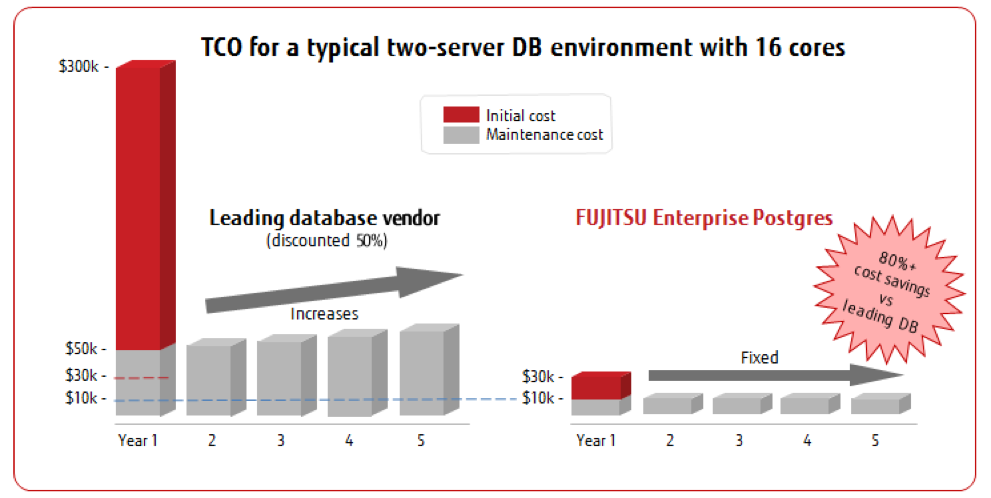

Fujitsu Technology and Services 2016
Fujitsu Technology and Services 2016
Fujitsu offers an extensive range of PostgreSQL services:
-
Combined services, support and training packages
-
Installation and configuration of PostgreSQL databases
-
Startup and ongoing tuning of the databases
-
Capacity management, risk assessment and secure DB implementation
-
Health check services for mature databases
-
Backup and disaster recovery planning and implementation
-
High-availability database design and implementation
-
Migration services from other proprietary databases
-
Support also includes PostgreSQL tools such as pgpool-II, Slony and rubyrep
Migration
Discover how to reduce your database TCO by 80% or more
Need to lower the ever-rising cost of your database license fees?
Don't like being locked in to a single vendor?
Looking for an enterprise and cost-effective database solution?
Fujitsu can help you identify significant cost saving opportunities compared to leading vendor renewals alone.
Fujitsu can help you identify significant cost saving opportunities compared to leading vendor renewals alone. Migration assessment
Fujitsu provides a database migration assessment where we analyze your existing database environment, assessing the infrastructure, schema and applications. Fujitsu’s consultant with the help of our migration assessment tools can evaluate the development effort for migration. A migration road map will be provided to ensure smooth and effective end-to-end database migration to PostgreSQL or FUJITSU Enterprise Postgres.
Fujitsu can evaluate all major databases and advise alternatives that offer the same reliability and performance at a significantly lower total cost of ownership.
Simply provide the relevant information and an experienced consultant will use our migration tools to provide you a detailed report, specifying exactly what changes would be required to migrate your database, what the migration will cost, and how much you can save.
Our migration services
Fujitsu provides a full range of migration services, and can assist in all the key steps of the migration process:
-
Migration assessment
-
Migration strategy
-
Migration of the database schema
-
Migration of the data
-
Verification
With Fujitsu’s expert migration capability, the journey to a lower-cost, enterprise database solution has never been easier.
Contact us if you would like to discuss our migration services in more detail or to request a quotation.
Health Check
Is your PostgreSQL database performing at its best?
We all know the benefits of getting our own health checked (even though it is something we often neglect).
Similarly, how "healthy" is your PostgreSQL database? Has the performance of your PostgreSQL database degraded over time?
Why is a health check a good idea?
A PostgreSQL health check identifies potential issues in performance with the added benefit of producing a set of "best practice" guidelines for PostgreSQL operation.
Data increases over time
Your hardware may not be fully utilized
Your hardware may no longer be suitable
Your database may not be optimally tuned
These and many other factors can affect the health of your system.
What does a health check include?
We understand that every system is different and accordingly, we tailor the health check to your specific configuration and requirements.
A health check comprises:
-
Evaluation of the operating system configuration. This includes I/O scheduling, memory and buffer/cache, security and network tuning.
-
Analysis of the PostgreSQL setup. This includes postgresql.conf evaluation and tuning, feasibility evaluation for upgrading to the latest version of PostgreSQL, audit of PostgreSQL memory use and suitability of the existing hardware configuration.
-
Storage infrastructure recommendations. This determines whether storage configuration upgrades (such as using a different RAID level or purchasing SAN hardware) would enhance performance and provide a benefit for the client.
And of course we can help you implement the recommendations laid out in the health check.
Contact us if you would like to discuss our migration services in more detail or to request a quotation.
Bench Check
Is your infrastructure letting you down?
Has your application outgrown its current infrastructure?
Our support team can help benchmark potential hardware upgrades and architectures to find the solution that provides the best price-performance.
Our team can tailor a benchmarking program to suit your application and workload by capturing real traffic and simulating database load under a variety of situations.
Contact us if you would like to discuss our migration services in more detail or to request a quotation.
Operations Review
Improve your operations through "best practice".
Let Fujitsu examine your procedures and processes
During this comprehensive analysis, a Fujitsu PostgreSQL specialist examines the current procedures and processes of your PostgreSQL instance to identify if best practices have been used. If required this can entail analysis of performance bottlenecks, a review of schemas, advice on backup regimen and the suitability of replication solutions.
Contact us if you would like to discuss our migration services in more detail or to request a quotation.
Consulting
Make the most of Fujitsu's expertise in implementing cost-effective, enterprise-grade, mission-critical open source database systems!
Are you looking for an open source strategy that will deliver all your database requirements? Fujitsu is highly experienced in implementing open source software (OSS) technologies that deliver optimal results while decreasing your total cost of ownership.
Fujitsu consulting specialists are here to provide advice and support with the following:
-
Strategic planning for new and established users of open source software
-
Database modelling and optimization
-
Rollout planning, resourcing, management, and implementation
-
Database and business application problem-solving
Fujitsu's consultants work at the enterprise, program, and project levels, and support clients through the full life cycle of their open source initiatives.
Contact us if you would like to discuss our migration services in more detail or to request a quotation.